A gentle, source-linked guide
Research, at a human pace
Lab discoveries are an invitation to study, not a personal treatment plan.
Reserve is not an age conversion
Ovarian reserve concerns egg quantity. A reserve marker or a broad biological-age estimate does not determine an individual’s egg quality, conception chances or menopause date. Ovuluna provides no validated ovarian-age formula.
Care beyond a cycle score
Keep movement, comfort, sleep and bone health in a conversation that considers your history and capacity. This guide does not set a universal supplement dose, training target or scan schedule.
Choose movement that fits you
Your symptoms, health and preferences can guide activity. Research does not establish one phase-specific exercise prescription that suits everyone.
Herbs need their own evidence
Traditional use, animal findings and isolated extracts do not establish improved human ovarian reserve. Review the exact product, interactions and your care context with a qualified professional.